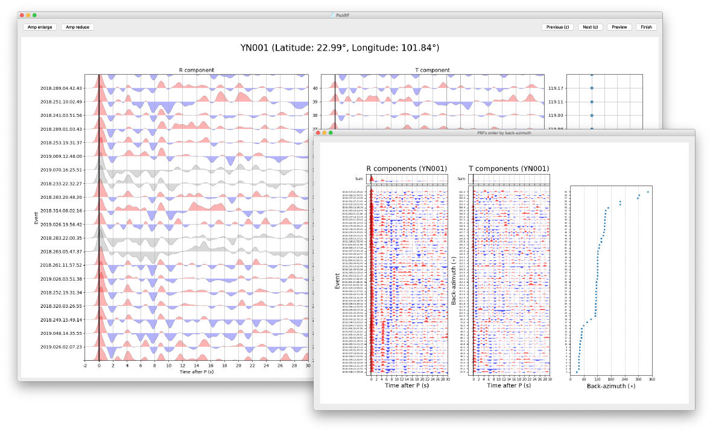

Seispy Documentation¶


Seispy is a graphical interface Python module for receiver function (RF) calculation and post-processing in seismological research. Automated workflows of RF calculations facilitate processing large volumes of different types of seismic data. The graphic user interface enables an intuitive and straightforward evaluation of RF quality control. Seispy contains the basic RF-based methods. Five main modules for the post-processing of RF are H-k stacking, crustal anisotropic estimation, harmonic decomposition, 2D and 3D common conversion point (CCP) stacking. The CCP staking in the different application scenarios can be handled by rich modules, such as time-to-depth conversion, 2D or 3D CCP stacking, and adaptive station or bin selection for CCP stacking profiles in a dense seismic array or a linear seismic array. As a Python module, functions in the Seispy can be called easily in python scripts for other purposes. The modular design allows new functionality to be added in a collaborative development environment. Seispy licensed under GPLv3 can be open accessed on Github repository.
Installation¶
pip install python-seispy
conda install seispy -c conda-forge
Further details are available in the Installation Guide.
Citation¶
Users using Seispy in their research please cite our peer-reviewed journal article in manuscripts
Reference
Mijian Xu, Jing He; Seispy: Python Module for Batch Calculation and Postprocessing of Receiver Functions. Seismological Research Letters 2022;
Learning resources¶
See also
Access here for video tutorial in Chinese
Libraries¶
seispy.distaz: Calculate distance and azimuth credited by the lithospheric seismology program at USC, butnumpy.ndarrayoperations are supported.seispy.geo: Tiny codes of geophysics.seispy.decon: Functions of deconvolution transferred from iwbailey/processRFmatlab includingIterative time domain deconvolution method (Ligorría and Ammon 1999 BSSA).
Water level frequency domain deconvolution method (CJ. Ammon 1991 BSSA)
seispy.rf: Procedure for RF calculation. The functions ofmatch_eq,search_eqinvokedobspy.core.UTCDateTimeandobspy.clientsfrom the Obspy.seispy.eq: RF processing for each event, which invokedobspy.io.sac,obspy.signal,obspy.taupandobspy.core.Streamfrom the Obspy.seispy.hk: H-k stacking for single station (Zhu and Kanamori 2000 JGR).seispy.rfani: A joint method for crustal anisotropic calculation (Liu and Niu 2011 GJI).seispy.slantstack: Slant stacking for single station (Tauzin et al., 2008)seispy.rfcorrect: Subsequent process of RFs including moveout correction and time to depth conversion (1D and 3D) (see Xu et al., 2018 EPSL)seispy.ccpprofile: CCP stacking along a profile.seispy.ccp3d: 3-D CCP stacking with extracting depth D410 and D660.
References¶
Ammon C J. The isolation of receiver effects from teleseismic P waveforms[J]. Bulletin-Seismological Society of America, 1991, 81(6): 2504-2510.
Liu H, Niu F. Estimating crustal seismic anisotropy with a joint analysis of radial and transverse receiver function data[J]. Geophysical Journal International, 2012, 188(1): 144-164.
Krischer L, Megies T, Barsch R, et al. ObsPy: A bridge for seismology into the scientific Python ecosystem[J]. Computational Science & Discovery, 2015, 8(1): 014003.
Ligorría J P, Ammon C J. Iterative deconvolution and receiver-function estimation[J]. Bulletin of the seismological Society of America, 1999, 89(5): 1395-1400.
Tauzin B, Debayle E, Wittlinger G. The mantle transition zone as seen by global Pds phases: No clear evidence for a thin transition zone beneath hotspots[J]. Journal of Geophysical Research: Solid Earth, 2008, 113(B8).
Xu M, Huang H, Huang Z, et al. Insight into the subducted Indian slab and origin of the Tengchong volcano in SE Tibet from receiver function analysis[J]. Earth and Planetary Science Letters, 2018, 482: 567-579.
Zhu, L., and Kanamori, H. Moho depth variation in southern California from teleseismic receiver functions[J]. J. Geophys. Res., 2000, 105( B2), 2969– 2980, doi:10.1029/1999JB900322.